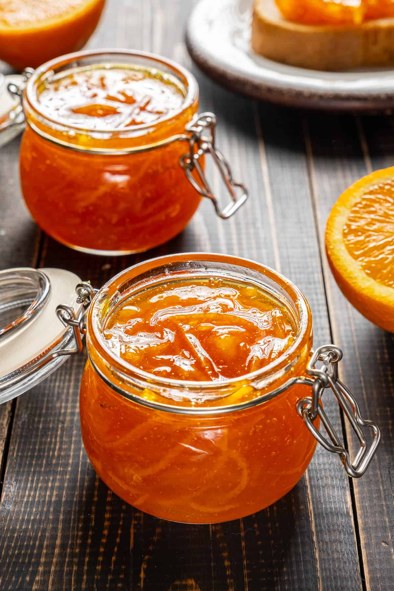

Orange Jam recipe

Description
This is a wonderful orange jam recipe I realised a few weeks ago with my niece. Mine was a little too thick, but it was realy good!
I'm going to give you a better chence at succeding at this somewhat tricky recipe
Ingredients
- 4 to 5 Oranges
- 250g of sugar
- 4l of water
- A tablespoon of vanilla extract
Steps
- Peel the oranges (you should also get rid of the pulp, it's too bitter, we don't want that)
- Place the peeled oranges into a big pot and pour in enough water to almost cover them. Low heat, let it be for about 45 minutes
- Take out the oranges and put them into cold water. Then cut them into small pieces (don' forget to take ut all the seeds and just keep the juicy parts)
- Back to the pot, constantly stir on low heat for 25 minutes. When it start getting thick, turn of the fire and put the pot into cold water or and ice bucket to cool it down while still stiring it
- Store the now done orange jam into a glass jar. It's ready!
That's it!
Glad you made it this far! You might as well try the recipe. Enjoy!
Go back to theHome page